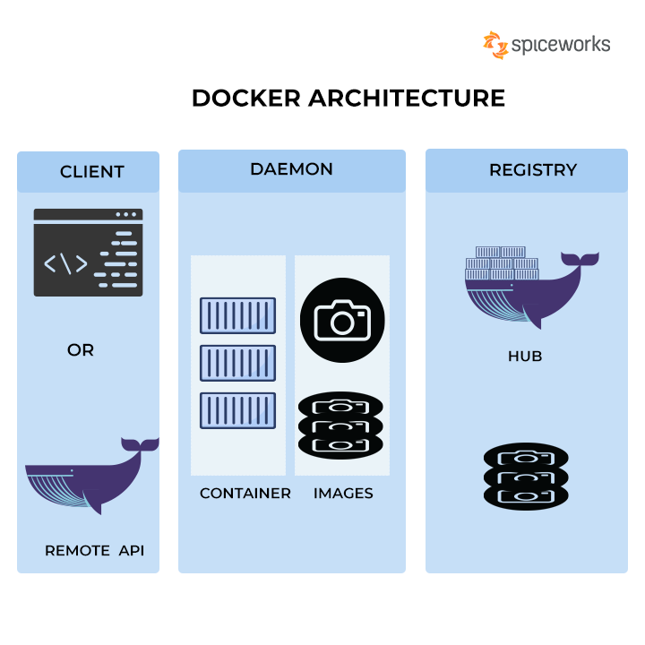

Docker
Différences VM / Docker

Architecture
Docker
Docker est une plateforme open-source qui permet de créer, déployer et exécuter des applications dans des environnements isolés appelés "conteneurs".Container
Les conteneurs sont des unités d'exécution légères et portables qui encapsulent une application et tous ses composants nécessaires (bibliothèques, dépendances, fichiers de configuration, etc.) pour qu'elle fonctionne de manière cohérente quel que soit l'environnement d'exécution.Images docker
une image Docker est un package autonome et portable qui contient tous les éléments nécessaires pour exécuter une application de manière isolée dans un conteneur Docker. Elle facilite la distribution, le déploiement et la gestion d'applications, en fournissant un environnement cohérent et reproductible.Use cases
Dev
- Tester différentes versions (MySQL - PHP - Redis - etc...)
- Plus facile à mettre en place (PHP est embarqué dans le container)
- Tout le monde à la même version sans change dans le système
Use cases
Prod
- Mise en place du container, si ça fonctionne en local, ça fonctionne sur le serveur.
- Déploiement continu
- Orchestration
Points clefs
IsolationLes conteneurs Docker fournissent une isolation au niveau du système d'exploitation, ce qui signifie que chaque conteneur est exécuté de manière indépendante et n'a pas d'impact sur les autres conteneurs ou sur le système hôte. Cela garantit que les applications et leurs dépendances sont isolées et fonctionnent de manière prévisible.
Points clefs
LégèretéLes conteneurs Docker sont légers par rapport à d'autres technologies de virtualisation traditionnelles. Ils partagent le noyau du système d'exploitation hôte, ce qui permet de réduire les ressources nécessaires et d'améliorer les performances.
Points clefs
PortabilitéLes conteneurs Docker sont conçus pour être portables, ce qui signifie qu'ils peuvent être exécutés sur n'importe quel système d'exploitation prenant en charge Docker, qu'il s'agisse d'un ordinateur local, d'un serveur distant ou d'un cloud public. Cette portabilité facilite le déploiement et la distribution des applications.
Points clefs
Gestion des dépendancesDocker permet de gérer facilement les dépendances des applications. Chaque conteneur peut inclure toutes les bibliothèques et les versions spécifiques dont il a besoin, sans interférer avec d'autres applications qui pourraient nécessiter des versions différentes. Cela facilite la gestion des environnements de développement, de test et de production.
Points clefs
RéplicabilitéDocker facilite la réplication de l'environnement d'exécution, ce qui permet de garantir que l'application fonctionnera de la même manière sur différents systèmes. Cela élimine les problèmes de compatibilité entre les différentes configurations des machines.
Comment peut-on utiliser Docker
En construisant des images puis les lancer à travers le "CLI" (Command Line Interface).
Dockerfile

Dockerfile
# Utilisez une image de base contenant PHP et Apache
FROM php:7.4-apache
# Copiez les fichiers de l'application vers le répertoire du serveur web
COPY src/ /var/www/html/
# Définissez le répertoire de travail
WORKDIR /var/www/html
# Exposez le port 80 pour les connexions entrantes
EXPOSE 80
# Commande à exécuter lorsque le conteneur démarre
CMD ["apache2-foreground"]
Dockerfile
docker build -t mon-projet-php .
Docker compose
Docker Compose est un outil qui permet de définir et de gérer des applications multi-conteneurs. Il facilite le déploiement et l'exécution d'une application composée de plusieurs services dans des conteneurs Docker.
Docker compose
Avec Docker Compose, vous pouvez décrire votre infrastructure d'application dans un fichier YAML appelé docker-compose.yml. Ce fichier spécifie les services, les réseaux, les volumes et les autres configurations nécessaires pour chaque composant de votre application. Vous pouvez configurer les dépendances entre les services, les ports exposés, les variables d'environnement, etc.
Exemple
version: '3.1'
services:
redmine:
image: sameersbn/redmine:5.0.5
restart: always
ports:
- 8080:80
environment:
DB_ADAPTER: mysql2
DB_HOST: db
DB_PORT: 3306
DB_NAME: ${DB_NAME}
DB_USER: ${DB_USER}
DB_PASS: ${DB_PASSWORD}
SMTP_ENABLED: true
SMTP_DOMAIN: axninf016.axn.fr
SMTP_HOST: 172.17.0.1
SMTP_PORT: 25
SMTP_STARTTLS: false
SMTP_OPENSSL_VERIFY_MODE: none
REDMINE_SECRET_KEY_BASE: eyJhbGciOiJIUzI1NiIsInR5cCI6IkpXVCJ9
REDMINE_SECRET_TOKEN: eyJzdWIiOiIxMjM0NTY3ODkwIiwibmFtZSI6IkpvaG4gRG9lIiwiaWF0IjoxNTE2MjM5MDIyfQ
volumes:
- /data/redmine/data:/home/redmine/data
- /data/redmine/logs:/var/log/redmine/
db:
image: mysql:latest
restart: always
ports:
- 3306:3306
environment:
MYSQL_ROOT_PASSWORD: ${DB_PASSWORD}
MYSQL_DATABASE: ${DB_NAME}
volumes:
- /data/mysql/data:/var/lib/mysql
- /data/mysql/save:/home/mysql-save
Utilisation AXN